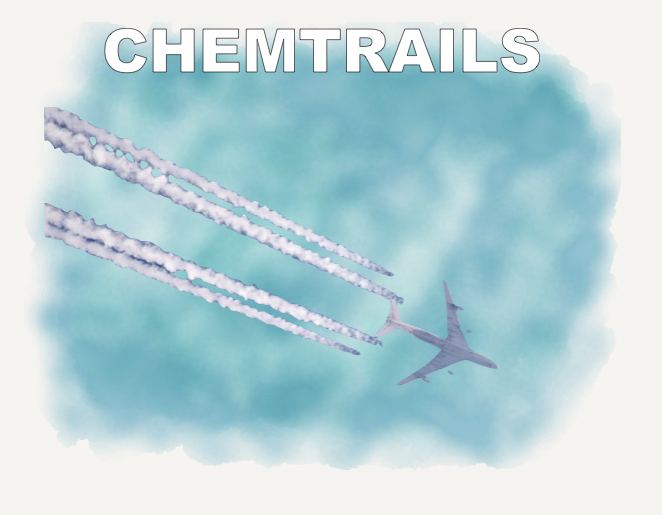
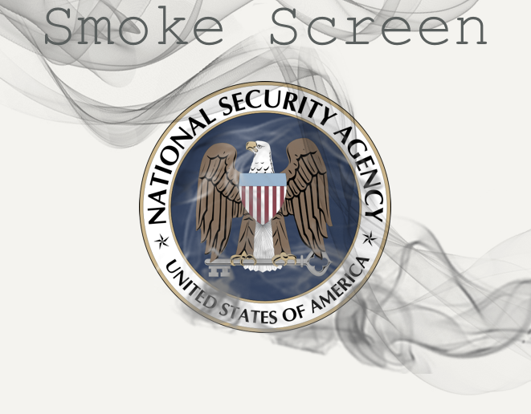

|
|
Tinfoil Hat Guy
OAK AGED IPA, 8.0% ABV
"The tinfoil hat loonies were right all along"
You used to have to be pretty reckless about sticking your neck out to get placed under surveillance. Physical wiretaps, secret bugs, long-lens cameras and undercover operatives were the state of the art, and they were expensive. It was easy to make the argument that if you weren’t a troublemaker, you’d be okay.
In those days, people who thought the government was monitoring them were routinely dismissed as paranoid conspiracy theorists. If you went to extremes to escape government surveillance without actually being a high-level diplomat, a top executive, criminal, terrorist, or spy, you’d be crazy.
In those days, this harsh judgement may have been right, but it's now 2016, and on surveillance, the tinfoil hat brigade has been vindicated.
Keep Reading...
|

|
Surveillance Van
CALIFORNIA COMMON, 6.6% ABV
"That pool cleaner's van has been parked out on the street for over four hours. No one's pool is that dirty."
Turn on any cop show, and the surveillance always seems pretty straightforward. There are always a couple of guys in a van and maybe another two in a car outside some apartment building. But the truth is, real surveillance is much more subtle.
Keep Reading...
|

|
Big Brother
MEGA IPA, 9.5% ABV
For a while, every time I borrowed a book from my local library in Washington, D.C., I was greeted by an Orwellian poster: “Big Brother Is Watching You!” I often wondered if others paused to reflect on the implication of these words, if they understood how profoundly living under surveillance distorts a society. It transforms your perspective, your manners, your relationships with friends, colleagues, students, with every waiter and cabdriver you meet. It changes your relationship with yourself.
Keep Reading...
|
|

|
Chemtrails
CREAM ALE, 5.9% ABV
Just like the fluffly white clouds left behind airplanes criss-crossing the sky, this virulent bio-toxin soup was created to facilitate a depopulation agenda. Drink carefully to avoid unwittingly controlling the weather, making the population sick, or partaking in other "geoengineering" activities.
|
|

|
Smoke Screen
RAUCHBIER, 8.0% ABV
We see you, NSA. We're not stupid.
Hey, what's that shiny thing over there?!
|